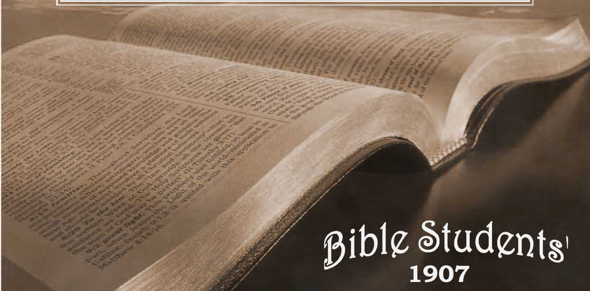

No. 77—God’s Unspeakable Gift. What Would Satisfy Jesus for His Travail of Soul at Calvary?
PRIMARY STUDIES IN THE SCRIPTURES
/ ENTERED AT THB POST OFFICE, ALLEGHENY, PA, AS SECOND-CLASS MATTER
BRANCHES: LONDON, N.W., 24 EVERSHOLT ST.; MELBOURNE, EQUITABLE BLDG., COLLINS ST.
/ ALSQ ELBERFELD, STOCKHOLM, COPENHAGEN, YVERDON-SUISSE.
Generosity an Element ot GoD=[iheness.—(BoD “ tbe Giver ot Every G00D anD perfect Gift," Indu Ding tbe “ UlnspeaRable Gift.”—©ur appreciation ot GoD’s Gifts. l)ow ErpresseD.—
“ flbore JBlesseD to Give Cban to ’Receive.”
ttHRHANKS be unto God for His unspeakable 1 gift.”—2 Cor. 9: 15.
In proportion as we attain God-likeness, in proportion as the Spirit of Christ dwells in us richly and abounds, in proportion as we possess the Holy Spirit, the mind of the Lord, in that same proportion will we be able to appreciate increasingly the testimony of the Scriptures that “ It is more blessed to give than to receive.” In our dealings with God it is proper, yea, it is necessary, that we realize our dependence, our own insufficiency, and His greatness and bountifulness; and that we learn to go to God as His “ dear children,” to whom He delights to give His favors, and who delight to receive these and to appreciate them with grateful hearts. We are debtors to God in every sense of the word, and always will be His debtors—we can never dispute the obligation under Wiiicb His mercy and lor nig1 kind.less have placetx1 us. The sooner we realize this -the better it will be for us. Some there are who, possessed with a false pride, feel and declare that they ask no favors from either God or man—that they pay their way and wish always to do so. Something of this spirit is praiseworthy as respects our dealings with our fellows, but the entire proposition is inconsistent with our relationship to the Almighty.
As we did not create ourselves, neither can we maintain our being, as the Scriptures assert: “ In Him we live and move and have our being.” This would have been true of us whether born on an angelic plane or as perfect human beings—we could not have created ourselves, directly or indirectly. God was responsible for our birth through the arrangements of His providence in nature, and He is the provider for His creatures on every plane. The fact that He causes the sun to shine upon the just and unjust and gives rain upon the evil as well as upon the good, and thus provides for the world of mankind that in general is in rebellion against Him and His authority, does not prove that the laws of nature are autocratic and that the results could not be otherwise. Rather, as the Scriptures show, these mercies of God scattered broadcast to all tell of a provision on God’s part for the necessities of His creatures. That He allows these laws to be interfered with at the present time and permits adverse conditions upon our race He fully explains to be because of its sinful, rebellious attitude, because the sentence, the curse of death, has been justly pronounced against it, and because He sees a way by which present lessons of adversity and tribulation may be made instructive to it as respects the “ exceeding sinfulness of sin.”
Two of the great lessons for us to learn are our complete dependence upon God and His loving kindness and tender mercies over all His works. But these things ■ can only be learned truly from one standpoint and by one class. Those who view matters from the outside will surely misunderstand, misinterpret many of the operations of divine providence, as the poet declared,
^Blind unbelief is sure to err, r_.
Arid'scan God’s work in vain;
He is His own interpreter, ■ And He will make it plain.”
“ The secret of the Lord is with them that reverence Him, and He will show them His covenant ”— His agreement, His future plans. In order to see, to understand, to appreciate them we must accept certain matters by faith: (1) “that He is”—that there is an Almighty Creator; (2) “that He is the rewarder of them that diligently seek Him.” Seeking the Lord diligently we find in the Bible that which commends it to our hearts as well as to our heads: but here we are beset by a danger and a difficulty, for while it is possible to have great assistance from our fellow-believers ;in, the study and understanding of the divine- Word, there is much danger of our becoming' even more confused by such assistances—by the creeds and theories of men, particularly those handed down from the “dark ages.” Whatever, therefore, we receive from men we must .accept tentatively—for examination, for proving and testing by the Word of God. Thus we try the spirits or doctrines, as the Apostle admonishes; thus, as the poet has expressed it, we allow God to be His own interpreter and to make the matter plain to us. Teachers who refer us to the Word of God, pointing out .its harmony with itself and with reason, giving the chapters and verses and showing the relationship between text and text— these are the teachers who are-feally helpful: all others are apt to be injurious, whether they address us orally or in print.
Only after we have been for a time in the school of Christ can we comprehend the force of the Apostle’s words that “ every good and perfect gift is from above, and cometh down from the Father of lights, with whom there is no variableness neither shadow of turning.” (Jas. 1: 17.) Then we begin to look about to find some of these good and perfect gifts. We do find many gifts and blessings, but very few of them purely good, very few of them perfect. Everything connected with our present condition is imperfect; even the sunshine and the rain which are common to all God’s creatures are evidently not furnished under perfect conditions. Imperfection seems to be written upon everything that we have as well as upon ourselves. The Bible explanation of all this is that, while God’s work is perfect, we are not really samples of His workmanship, but depraved, fallen, imperfect through the original sin of Father Adam and its entailed weaknesses and blemishes upon His posterity. The good and perfect gifts of God are only seen by the eye of faith—only seen by those whose eyes of understanding have been opened to see by faith Jesus, the great Redeemer—to see in God’s due time His great work of redemption accomplished, the wiping away of all tears from off all faces, and the reestablishment of everything on the plane of perfection—the destruction of death and everything con-—Fceted therewith, ■ apd. t11*—establishment of perfect life conditions such as God has promised.
What, then, is seen by the eye of faith by those whose eyes of understanding have to some extent been opened? We answer that they are seeing more and more of the riches of God's grace, and appreciating more and more all of His gifts and favors, and especially the great gift, the unspeakable gift, mentioned in our text. What this gift is the entire Scriptures set forth in various presentations. One of the most forceful of these statements is by the Apostle, who declares that “ the wages of sin is death, but—
What is there in the gift of eternal life that makes it so wonderful, that leads the Apostle to describe it as God's unspeakable gift? Ah, everything is in that gift! for without it, without eternal life, there is no eternal blessing. False theologies have diverted or taken away from this Bible statement that eternal life is God’s gift, and that He will supply it only to those in fullest harmony with Himself. False theologies have taught us that eternal life is a natural quality—yea, more, that it is a persistent one, so that even God Himself could not destroy our lives or being. This erroneous thought has distorted all our reasonings, and left the issue as between an eternal life in torture or an eternal life of bliss; whereas the Scriptures clearly define a different issue, namely, as between extinction, destruction, and a life in harmony with God, a life which divine love and mercy have provided for those in accord with the Almighty. 5 Let us hearken back to the testimony of the Lord and the apostles and the prophets on this subject, and see that God1 is now proffering the Church a gift of eternal life through Jesus Christ our Lord; let us note the Scriptural proposition that if we are wilfully and deliberately and intelligently rejecting this gift it will be withdrawn, and the effect upon us will be Second Death, everlasting oblivion, from which God offers no hope of recovery. Let us note that this is the general dealing of God, and hence that when His time shall come for dealing with the world of mankind in general, during the Millennial age, the offer then to be made to them, when their eyes of understanding shall be opened and their deaf ears shall be unstopped, will be a similar proposition ’of life or death everlasting. Those who will accept God’s gift on God’s terms are welcome to it; He is pleased to give it to them; those who will then reject it shall die the Second Death, extinction.
“Through Jesus Christ our Lord,” is the Apostle’s statement. The gift is not offered to us by the Father directly, but indirectly through the Son. The Apostle writes to those whose eyes of understanding have been opened, whom he declares are all with open face looking into the mirror of God's Word and seeing there His glorious character and purposes—to these the Apostle says, “ This is the record, that God has given unto us eternal life; and this life is in His Son; he that hath the Son hath life, he that hath not the Son shall not see life.” Again the Scriptures inform us that this life is merely reckoned to us now and that we will not get it until vfe experience the change of the First Resurrection at the second coming of our Lord, as it is written, “ Your life is hid with Christ in God.”' (Col. 3:3.) Thus every suggestion of God’s gift is bound up similarly in Christ; only as we become united to Him, related to Him can we have this gift of God, this unspeakable gift. Hence it is not improper that we should sometimes both think and speak of Jesus Himself as being
Both Jesus and the eternal life which the Father has provided through Him are unspeakable in the sense that it is impossible for us to fully present to others the rich fulness and glory which inhere in both. Who can describe life eternal either on a spirit plane or as restored and perfect humanity? It is unthinkable—beyond all the powers of our mental comprehension: the thought can only be imperfectly communicated, only be imperfectly grasped, and must gradually dawn upon us, grow upon us in appreciation and comprehension. Similarly the wealth of riches of divine grace represented in our Lord Jesus is unspeakable; we cannot tell it—the natural man cannot receive of the things of the Spirit of God, neither know them.—1 Cor. 2: 14.
Only those who are especially favored of God can get even the first glimpse of the riches of God’s grace in Christ. If this glimpse be received and appreciated it leads to clearer and still clearer views, for all who will appreciate either Jesus or the gift of life must be “taught of God.” (John 6:45.) As our Redeemer said to Peter, “ Blessed art thou, Simon Bar-jona, for flesh and blood have not revealed this unto thee, but my Father in Heaven.” So all our teaching and preaching cannot overcome the blindness of the natural fallen mind in respect to God's gift and the channel through which it comes; only as the Father shall grant His blessing may fruits to our labors be expected. As it is written, “ As many as the Lord your God shall call,” and again, “ No man can come unto me except the Father which sent me draw him.” Hence we see that our present appreciation of divine goodness implies three gifts—(1) the divine provision of eternal life; (2) Christ the channel; and (3) the knowledge by which we are enabled to appreciate both the gift and the channel.
«■ «
As we look out over the world and perceive 1,200,000,000 in heathen darkness and the remaining 400,000,000 of nominal Christendom in the dull, foggy light of superstition and ignorance, our first thought might - be that the world in general has rejected God’s gift and hence has sealed its doom for the Second Death. Then we find relief in the scriptural assurance that the present darkness over all the earth is the result of Adam’s sin and condemnation to death; that the world has been in this sinful, fallen, darkened condition from Adam's time until now^that although Christ has come -and offered His sacrifice for sin, and thus made possible the removal of the curse and the bringing back of Adam and all of his race to harmony with God and to the possibility of accepting His gift of eternal life upon His terms, nevertheless the offer of this opportunity to the race in general is still future. How glad we are that in God’s due time all the blind eyes will be opened and the deaf ears unstopped, and the shadows and fogs of superstition and error all flee away before the rising of the Sun of Righteousness —the glories of the Millennial Kingdom.
The few who now see and appreciate and accept God’s gift are indeed, as the Scriptures declare, “ a little flock,” and although generally disowned by man and “ counted fools for Christ’s sake,” they are rich indeed in that they have become in advance of the world the recipients of God’s favor by faith, and that.-^ven now they may think of themselves as being possessors of life eternal—because of their joy and confidence in Him who has promised. Indeed there is a superlative blessing of eternal life on the spirit plane, “ far above angels, principalities and powers,” partakers of the divine nature. Surely “ eye hath not seen nor ear heard, neither hath it entered into the heart of man, the things God hath in reservation for them that love Him”—for the class he is now calling out—for the class who have now accepted Christ as their Redeemer and their Bridegroom—for the class which, having Christ, possess also all the riches of God’s grace that center in Him, and whose hopes will be perfected when He shall appear and they shall be changed and made like Him, sharers in His glory. Thanks be unto God for His linspeakable gift, is certainly the language of their hearts.
God Himself is the great pattern set before us ir» His Word, “ Be ye like unto your Father which is in heaven.” In proportion then as we have received of God’s gift and appreciate it, in that same proportion are we privileged to be so “ taught of God ’* as to be. more and more of His mind, His spirit, His disposition—desirous of giving—generous. Since man was-created in God’s image, all men would have possessed this generous disposition had it not been fertile fall; and we find that the fall has especially-blighted some in one particular and others in another. Hence amongst natural men there are some-who are generous, and to that degree have perhaps more God-likeness than some of the children of grace—especially until the latter have been trained in the school of Christ. For we are to remember that God’s message and drawing power are exerted often upon the mean things of this world, the less-honorable, that the Lord may demonstrate the power-of His grace and Truth in the transformation of character. But so surely-as we have become Gods-children, the recipients of His blessing and the instruction of the school of Christ, this quality of benevolence will grow in us, and the more ripe we-become as Christians, the more it will abound in our words and thoughts and deeds. Any other condition, any failure to make progress, and turning toward greater selfishness, would be* sure signs that we are faced in the wrong direction, walking after the flesh and not after the Spirit. ’
Our benevolence may manifest itself in various-directions according to the enlightenment of our-understanding, but associated with everything that is God-like will surely be an endeavor to copy our Maker—to be generous along the same lines in which He is generous. Thus the Apostle says that the-followers of Christ should “ do good unto all mem as they have opportunity, especially unto the household of faith.” (Gal. 6; 10.) The household of faith should come first in our estimation, in our love, im our benevolence, because they are His—because they-are in harmony with the Lord, accepted by Him and seeking to walk in His way, fellow-sojourners with ourselves in the narrow way, enduring the offense of the cross, the misunderstanding of the world, the opposition of the Adversary. Such properly enough, demand our chief sympathy, our chief love, our chief endeavors and benevolences. 1
“ To do good and communicate forget not, for with such sacrifices God is well pleased,” writes the Apostle. There are thousands on thousands in the world who are in need, in want, and those possessed by the Spirit of the Lord will feel an intense desire to give a gift from their fulness to the needy. But here again the difficulty arises: there are so many needy and so many needs, and our opportunities and talents are so limited—how shall we discriminate? What lines shall we draw? We answer that as comparing spiritual and temporal gifts we should prefer to give the higher, the spiritual, wherever we have the opportunity—not forgetting, however, the use of > the other as occasion may demand or opportunity offer. Since the judgment of each will be according to his light and the opening of his understanding, it follows that there are many more who can appreciate the privilege of giving earthly blessings, comforts, succor, solace, etc., than can understand or appreciate the still higher privilege of giving heavenly gifts, blessings, counsel, succor, consolation, comfort. Whoever, therefore, has spiritual ability to give further spiritual favors should rejoice in the exercise of this as his highest privilege. So it is, we have seen, with our Heavenly Father: in a general way He provides for all, but in a special particular sense His gifts and blessings at the present time are for those who love Him, and we are instructed to follow His example. Likewise our Lord gave His time and attention especially to the most advanced and earnest of His day; and similarly the Apostles, wherever they went, sought first those who knew the Lord and reverenced Him.
The chief gift that we can bestow upon any is the unspeakable gift, for, remarkable as it may seem, the Heavenly Father is pleased to use our ministries in the conveyance of His gift, in the finding of those who are of an appreciative heart, ready to receive it. Additionally, however, there are other ministries of love in which we may engage. Those who are our brethren in spiritual things, who like ourselves are the recipients Of the unspeakable gift of God through Christ, have their special trials and besetments and difficulties from the wrorld, the flesh and the Adversary, and we should be on the alert to comfort, to assist, to counsel, to uphold these, to help them bear their burdens, and thus to co-labor with them and with the Redeemer Mid so to become special servants of the great Burden-Bearer and Shepherd of the sheep in His care over the flock. The same spirit will lead us, as opportunity may afford, to speak words of gentleness and encouragement and kindness and sympathy to others who are not of the Lord's consecrated ones, but of the world; and whosoever has the Spirit of the Lord in good measure will surely be glad to engage in this service, glorifying the Lord in His body and spirit, which are His.
We are mot to be content with receiving the gift of God, eternal life through Jesus Shrist our Lord; we are not to content ourselves either with carrying the good tidings to others for their blessing and comfort. We are to remember the appropriateness of thanksgiving. The Psalmist, speaking prophetically for us, says, “ What shall I render unto the Lord for all His benefits to me?” He answers, “I will take the cup of salvation and call upon the name of the Lord.” It is thus true that in accepting God’s cup of Salvation we are rendering him the acknowledgment and thanks which he most heartily approves. Nevertheless it is appropriate that we render thanks at all times and for all things—that we render thanks to the Father as well as to the Son— that we recognize that all things are of the Father and all things are by the Son—that the Father planned the entire arrangement for our salvation, and that the Son, our Lord Jesus, is His gracious and honored representative and servant in the carrying out of His program. So, then, while thanking the Son and appreciating His service, let us also remember to give thanks unto God the Father for His unspeakable gift.
The rustling garments of departing Night
Sweep thro’ the vales; upon th’ uplifted breeze
Wings swift Aurora, gilding sky and trees, Awak'ning birds, and gemming dew-drops light With pearly lustre in her Westward flight;
And, ere the morning mists half melt away,
Enthroned upon the hills with Sovran sway, The regal sun bursts on my raptured sight.
E’en thus shall flee the gloom of doubt and feat, And faith the coming dawn of Truth proclaim;
Thus grief shall end, and every glist’ning tear, Impearled in heavenly light, shall angles frame
Into a crown of joys, when shall appear .
The Sun of Glory, whom the Heavens acclaim.
—George Gunter.
Pastor C. T. Russell’s Christmas Sermon, 1906, reported in the Pittsburgh Dispatch.